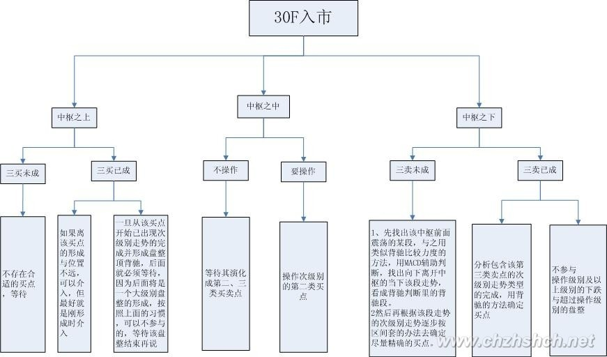
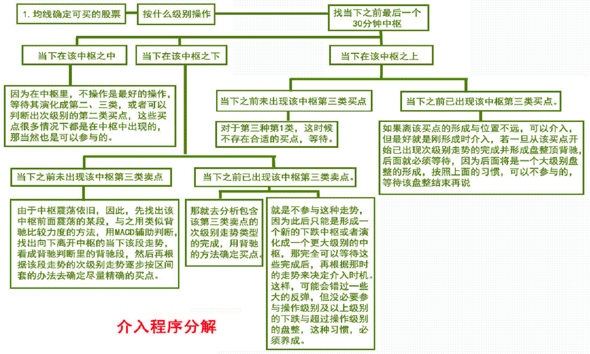
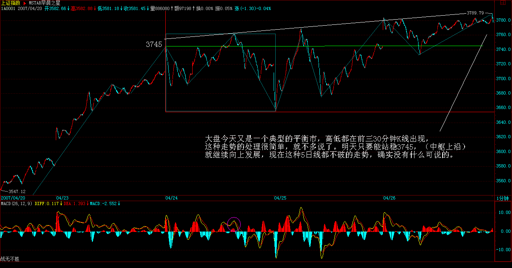

|
 |
教你炒股票49：利润率最大的操作模式
(2007-04-26 08:16:56)
本周就不解《论语》了，并不是本ID不想写，而是51长假，对那些希望多学点本ID理论的人，是一个好的机会，本ID也就多写点这方面的，给有需要的多准备点，毕竟，这对于大多数人来说更迫切。前面说了那么多情况，从实用角度，为了理清实际操作中的基本思路，先穿插这堂课。
一个人，拿着本来想去419的钱准备入市，那么，首先要明确，自己要按什么级别来操作，这个问题，前面已经反复说过了，不妨假设这级别是30分钟。那么，进到市场，打开走势图，首先要找什么？就是找当下之前最后一个30分钟中枢。这其实对任何新进的股票，道理是一样的。例如，你出了某股票，重新选择一只新的，那就会面对相同的情况。
显然，这将会出现三种情况：
1.
当下在该中枢之中 (ZG-ZD)。
3.
当下在该中枢之上（大于ZG)。
注意，这最后的30分钟中枢，是一定可以马上确认的，无须任何预测，当然，前提是你首先要把本ID前面说的理论学好，如果连中枢都分不清楚，那就没办法了。
第一种情况：显然，这中枢在延伸中，而后两种情况，分别可以用第三类买卖点分为两小类。
第二种情况(分两类)： 1、当下之前未出现该中枢第三类卖点。2、当下之前已出现该中枢第三类卖点（正出现也包括在这种情况下，按最严格的定义，这最精确的卖点，是瞬间完成的，而具有操作意义的第三类卖点，其实是一个包含该最精确卖点的足够小区间）。
第三种情况(分两类)：1、当下之前未出现该中枢第三类买点。2、当下之前已出现该中枢第三类买点。
对于第一大类（注: 第一种情况），因为在中枢里，由于这时候怎么演化都是对的，不操作是最好的操作，等待其演化成第二、三类（注：第二、三种情况），当然，如果你技术好点，可以判断出次级别的第二类买点，这些买点很多情况下都是在中枢中出现的，那当然也是可以参与的。但如果没有这种技术，那就有了再说了。只把握你自己当下技术水平能把握的机会，这才是最重要的。
对于第二种第1类，由于中枢震荡依旧，因此，先找出该中枢前面震荡的某段，与之用类似背驰比较力度的方法，用MACD辅助判断，找出向下离开中枢的当下该段走势，看成背驰判断里的背驰段，然后再根据该段走势的次级别走势逐步按区间套的办法去确定尽量精确的买点。
注意，用来比较的某段，最标准的情况，当然是前面最近向下的，一般情况下，中枢震荡都是逐步收敛的，这样，如果继续是中枢震荡，后面的向下离开力度一定比前一个小。当然，还有些特殊的中枢震荡，会出现扩张的情况，就是比前一个的力度还要大，但这并不必然就一定会破坏中枢震荡，最终形成第三类卖点，这个问题比较复杂，在后面谈论中枢的各种图形形态时，才能详细说到。一般来说，这种情况，用各种图形分解与盘整背驰的方法就可以完全解决。(注：这类注意盘背后成3卖退出）
对于第二种第2类，由于该中枢已经结束，那就去分析包含该第三类卖点的次级别走势类型的完成，用背驰的方法确定买点。当然，还有更干脆的办法，就是不参与这种走势，因为此后只能是形成一个新的下跌中枢或者演化成一个更大级别的中枢，那完全可以等待这些完成后，再根据那时的走势来决定介入时机。这样，可能会错过一些大的反弹，但没必要参与操作级别及以上级别的下跌与超过操作级别的盘整，这种习惯，必须养成。
对于第三种第1类，这时候不存在合适的买点，等待。对于第二种第2类，如果离该买点的形成与位置不远，可以介入，但最好就是刚形成时介入，若一旦从该买点开始已出现次级别走势的完成并形成盘整顶背驰，后面就必须等待，因为后面将是一个大级别盘整的形成，按照上面的习惯，可以不参与的，等待该盘整结束再说。
当然，如果整个市场都找不到值得介入的，而又希望操作，那么就可以根据这些大点级别的中枢震荡来操作，这样，也可以获得安全的收益。
上面已经把一个固定操作级别的可能操作情况进行了完全分类与相应分析(注：固定30分操作级别的买点1：30分背驰1买以及30分2买；买点2：30分中枢下震荡盘背；买点3：30分中枢上3买；买点4:30分中枢内次2买）。显然，对于一个中枢来说，最有价值的买点就是其第三类买点以及中枢向下震荡力度出现背驰的买点。前者，最坏的情况就是出现更大级别的中枢，这可以用其后走势是否出现盘整背驰来决定是否卖出，一旦不出现这种情况，就意味着一个向上走势去形成新中枢的过程，这种过程当然是最能获利的。至于后面一种，就是围绕中枢震荡差价的过程，这是降低成本、增加筹码的。
注意，一定要注意，很多人不知道怎么去弄差价，似乎所有机会都可以去弄。
但如果从最严格的机械化操作意义上说，那么只有围绕操作级别中枢震荡的差价才是最安全的，因为肯定能做出来，而且绝对不会丢失筹码。
在成本为0后的挣筹码操作中道理是一样的。也就是说，在确定了买卖级别后，那种中枢完成后的向上移动时的差价是不能做的，中枢向上移动时(娇注：3买后非背驰向上，或者中枢后非盘背向上)，就应该满仓，这才是最正确的仓位。而在围绕中枢差价时，在中枢上方仓位减少，在中枢下方仓位增加，注意，前提是中枢震荡依旧，一旦出现第三类卖点，就不能回补了，用中枢震荡力度判断的方法，完全可以避开其后可能出现第三类卖点的震荡。
那么，如果这个中枢完成的向上移动出现背驰，就要把所有筹码抛出，因为这个级别的走势类型完成，要等待下一个买点了。如果不背驰，就意味着有一个新中枢的形成，注意，小级别转大级别其实并不复杂，一样可以看成一个新中枢，只是该中枢有可能和前面的重合，而趋势中是不可能出现的。该中枢，就可以继续用中枢震荡的方法短差，然后再继续中枢完成向上移动，直到移动出现背驰。
其实，可以用严格的方法证明
缠中说禅第一利润最大定理：对于任何固定交易品种，在确定的操作级别下，以上缠中说禅操作模式的利润率最大。
该模式的关键只参与确定操作级别的盘整与上涨，对盘整用中枢震荡方法处理，保证成本降低以及筹码不丢失（成本为0后是筹码增加，当然，对于小级别的操作，不会出现成本为0的情况），在中枢第三类买点后持股直到新中枢出现继续中枢震荡操作，中途不参与短差。最后，在中枢完成的向上移动出现背驰后抛出所有筹码，完成一次该级别的买卖操作，等待下一个买点出现。
这里必须注意，中枢震荡中出现的类似盘整背驰的走势段，与中枢完成的向上移动出现的背驰段是不同的，两者分别在第三类买点的前后，在出现第三类买点之前，中枢未被破坏，当然有所谓的中枢震荡，其后，中枢已经完成就无所谓中枢震荡了，所以这问题必须清楚，这是有严格区分的，不能搞糊涂了。
还有，在中枢震荡中，本质上是应该全仓操作的，也就是在中枢上方全部抛出筹码，在下方如数接回，当然，这需要高的技术精度，如果对中枢震荡判断错误了，就有可能抛错了。所以对不熟练的，可以不全仓操作。但这有一个风险，就是中枢震荡后，不一定就能出现第三类买点，可以直接出现第三类卖点就下跌，这在理论与实际中都是完全允许的。这样，如果在中枢震荡上方没完全走掉，那有部分筹码就可能需要在第三类卖点处走，从而影响总体利润。如果完全按照以上缠中说禅操作模式，就不存在这个问题了。至于能否达到这缠中说禅操作模式的要求，是技术精度的问题，需要在实际中磨练的问题。
当然，有一种磨练方式是可行的，就是宁愿抛错了，也要严格按方法来，毕竟就算你的技术判断能力为0，抛错的几率也就是50%，后面还有一个第三类买点可以让你重新买入，如果抛对了，那可能每次的差价就是10%以上，别小看这中枢震荡的力量，中枢震荡弄好了，比所谓的黑马来钱快而且安全，可操作的频率高多了，实际能产生的利润更大。
以上的方法是对固定操作品种来说的，也就是不换股。还有一种更激进的操作方法，就是不断换股，也就是不参与中枢震荡，只在第三类买点买入，一旦形成新中枢就退出。例如操作级别是30分钟，那么中枢完成向上时一旦出现一个5分钟向下级别后下一个向上的5分钟级别走势不能创新高或出现背驰或盘整背驰，那么一定要抛出，为什么？因为后面一定会出现一个新的30分钟中枢，用这种方法，往往会抛在该级别向上走势的最高点区间。当然，实际上能否达到，那是技术精度的问题，是需要干多了才能干好的。
其实，同样可以用严格的方法证明
缠中说禅第二利润最大定理：对于不同交易品种交易中，在确定的操作级别下，以上激进的缠中说禅操作模式的利润率最大。
注意，并不是说第二定理就比第一定理更牛更有意义，这里所说的利润率，是指每次操作的平均利润/需要占用资金的平均时间，但，真正能产生总体利润的，还与操作的频率有关，第二虽然激进，但也需要有激进的市场机会，如果这市场就没有可操作级别的第三类买点，那也只能干等，而第一不需要这么强的市场条件，基本上，除了最恶劣的连续单边下跌、连大点的中枢都没有的，都可操作，所以在实际操作中，两者不能偏废。
显然，对于大资金，以上的方法需要有特殊的处理，资金越大，利润率显然越低，因为很多级别的操作不可能全仓参与，就影响资金的总体利用率。一般来说，小资金增长可以极为迅速，用本ID的方法，无论牛市熊市，最笨的人，完全随机挑股票，完全找不到所谓的黑马，每年保持200%以上利润是一点问题都没有。如果你技术精度高，即使在熊市里，每年来个500%的增长，也是不难的，因为熊市里，中枢震荡的机会反而多，而且大反弹，本质上也就是大级别中枢震荡的机会不少，处理好了，并不比牛市来钱慢。但这种增长只能维持几年，一旦资金大到一定程度，就会遇到资金增长瓶颈。如何突破该瓶颈，这是另一个问题，以后会说到。
-------------------------------------------------------------------------------------------------- 归纳：
打开走势图，找当下之前最后一个操作级别中枢。 

每日解盘(2007-04-26 15:21:18) 大盘今天又是一个典型的平衡市，高低都在前三30分钟K线出现，这种走势的处理很简单，就不多说了。明天只要能站稳3745，就继续向上发展，现在这种5日线都不破的走势，确实没有什么可说的

说实话，本ID现在就想放假了，那交易所也够混的，下周一还单独开一天，这样周线上就有一个量特别小，看起来一点都不美观，还不如明天结束，7号开盘。你说你还开盘，本ID又不能离开，免得被人捣乱，大概很多人都有这种想法，简直无聊透了。 49课缠师的回帖整理
(2010-01-30
09:41:33)
缠中说禅：
2007-04-26
21:21:16 [举报]
[匿名] 新年好
缠中说禅：
2007-04-26
21:40:35 [举报]
[匿名] 飞
缠中说禅：
2007-04-26
21:48:33 [举报]
[匿名] 笨笨
缠中说禅：
2007-04-26
21:54:29 [举报]
[匿名] 漂泊
缠中说禅：
2007-04-26
21:58:57 [举报]
[匿名] 飞
缠中说禅：
2007-04-26
22:04:21 [举报]
[匿名] 萝卜白菜
缠中说禅：
2007-04-26
22:11:53 [举报]
[匿名] 股虱
缠中说禅：
2007-04-26
22:14:39 [举报]
[匿名] christine
缠中说禅：
2007-04-26
22:27:37 [举报]
[匿名] yaa |
|
|
|